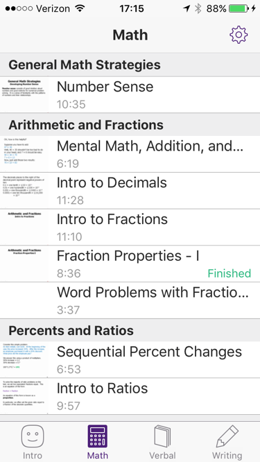
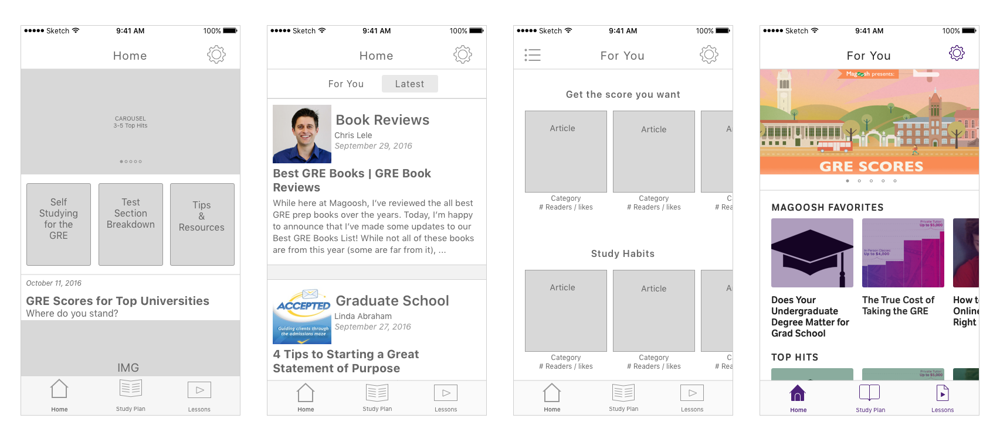
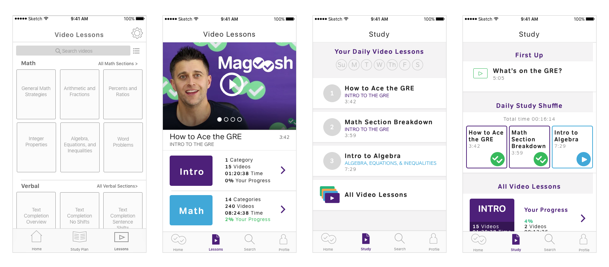
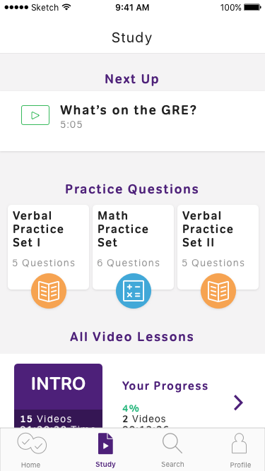
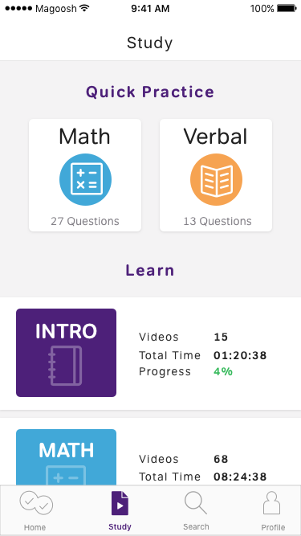
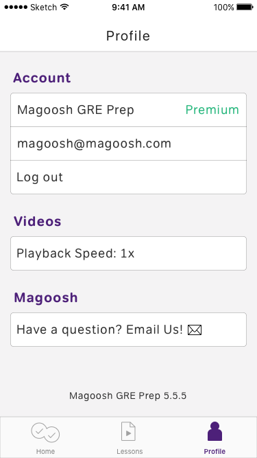
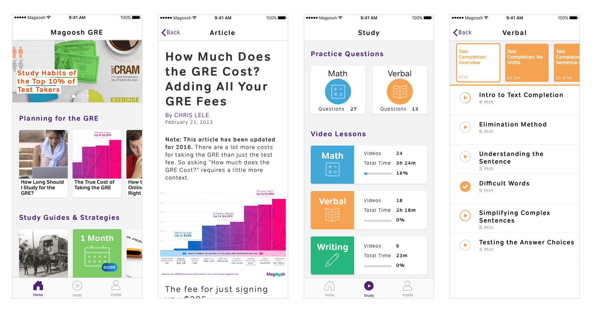

The redesigned GRE Prep App makes quality content from Magoosh’s GRE online product available to take on the go. Included are practice questions, getting started blog articles, study schedules, and even more resources. Additionally the video lesson content has a new look for easier navigation and ways for students to track their progress.
the company
Magoosh is a test prep company that develops products to help students study for standardized tests such as the GRE, SAT, ACT, GMAT and others. The GRE Prep App is one of Magoosh’s supporting products within its GRE line. The core product is web-based.
my role
I joined Magoosh to develop a new UX/UI for the GRE Prep App. I helped our team strategize how to incorporate additional content into the existing platform, designed a new layout for video lessons, and created the overall UI of the app to increase user engagement. The work described here was completed within a 3-month quarter.
I worked alongside a small but passionate team including Jessica Ellis, product manager and Aria Buckles, developer.
where we started
The original version of the GRE Prep App looks like this. It showcases video lessons created by in-house experts to teach exam subjects math, verbal, and writing. Paid users have access to the full list of videos while free users can view a selection.
Downloads of and engagement with the GRE Prep App is minimal. Most paid users use their web accounts to access the video lessons along with a host of other resources available to premium members.
Problems to Address
- Users cannot grasp the breadth and usefulness of Magoosh’s complete GRE product by solely using the GRE Prep App.
- Engagement with video lessons was minimal for users who were not already signed up for a GRE exam in the near future. Students who were early on in their GRE planning were not ready to start studying.
our goals
Our primary objective was to increase unique content views per user from its current average of 1.9 to 3 views per month for new users. We used content views as the metric to measure engagement.
Our secondary goal was to increase an app user's awareness of the premium web product in order to improve conversion.
How We Approached this Project
- We tackled feature by feature in 2-3 week design sprints.
- We enlisted users to test and validate our feature and design decisions.
- At the end of most design sprints we released a live version to measure the impact of features.
- We reviewed our tracking experiments to confirm or deny our hypotheses about newly added features.
home
We introduce a “Home” tab to showcase a handpicked subset of Magoosh’s GRE blog content, study guides, and additional Magoosh resources. The GRE blog is rich with information and tips for getting started with the GRE. We hypothesized that including a curated selection of these articles and resources would appeal to new users who might not be ready to commit to studying.
I explored ways of presenting many separate pieces of information at a glance without needing to navigate away from the page. We started with templates for news feeds and recommended music playlists before deciding on a design resembling the App Store. The articles are presented in horizontal scrolling categories with each layer representing a grouping of articles and resources. The most sought after information occupies the top and leftmost positions in the row.
Themes from Talking to Current Students
Testing our designs was a key component of our progress throughout this project. We conducted 5 user tests through InVision’s collaboration with usertesting.com, 4 in-person user tests, and screen shares with avid current users of the product on Facebook and Slack to get early feedback.
The response was positive overall. Participants loved the colorful visuals and bite-sized tips and tricks we had pooled.
- The top carousel of featured articles was a hit among participants. We were initially concerned that a carousel might take up valuable space while only providing a single content placement.
- Reading text came secondary to images. Participants focused heavily on the asset representing a blog article rather than its title.
- Overly rounded thumbnail assets made the app feel too marketed and commercial rather than study-focused.
study
The “Study” tab started off as “Lessons” and we planned for it to contain all of the video lessons already available in the app. Our objective was to combine the separate tabs for each exam subject into one, and to improve the navigation through an unwieldy list of video lessons.
A sticking point in redesigning “Lessons” was the effort to appeal to new and existing users alike. As a priority we kept the new user in mind. For a first-time user we aimed for a browsable experience. We also wanted to demonstrate the full scope of lesson content available to study. For existing users we chunked lessons into subjects, sub-categories, and the lessons within categories to make it easier to return to studying where one left off. Here are some preliminary designs.
Listening to Students
I’m not sure where to begin or what to do first.
One solution here was to introduce a set of 3 daily videos to watch and complete. The idea behind this design was to create a clear focal point for new students who were still exploring “Study”. We later replaced this with practice questions.
I need practice questions!
Students repeatedly requested access to practice questions on mobile.
Practice Questions
Adding in practice questions was not a priority towards our goals and potentially technically costly to implement. However as requests for questions became hard to brush aside we tested a lightweight design to determine exactly how verbal requests translated into engagement with practice questions. This test helped us clearly decide to move forward with adding in practice questions as a new feature in the “Study” tab.
We incorporated practice question into our engagement goal by counting a tap on either the math or verbal practice question button as 1 content view.
 Video Lessons Navigation
Originally video lessons were presented in a long list. We needed to improve on this design by consolidating all subjects onto the “Study” tab. We considerated the following for displaying video lessons:
- Reveal the breadth of subcategories, or video topics, available within subjects.
- Improve navigation directly to individual videos. In the original app the user must scroll down a long list to access later videos in a subject.
- Build upon the progress tracking indicators for watched and flagged videos.
Testing our Design: A Glitch in the Interaction
For navigating through individual video lessons I designed a horizontal scroll of the subcategories to show the full scope of content covered within a subject. This presentation also allows for users to jump to video further down the list. The video lessons for each subcategory appeared below the active subcategory tile.
Testing this design uncovered that the subcategory tiles were disconnected from their video lessons below. We had not built in any visual cues or transitions to indicate that tapping on a new subcategory tile would change the list of videos below.
- Students needed to see the total time for individual videos and subcategories in order to budget their study time.
- Subcategory tiles felt disconnected from their video lists below. We needed to add an interaction that would link the active category with its list.
- Students were most likely to go through the videos chronologically until they ran out of time to study, at which point they would pick and choose among the remaining videos.
profile
We completed our bottom navbar with the “Profile” tab. “Profile” contains the information originally held in “Settings”. Few users interacted with “Settings” when located in the top right position of the screen. Moving it down to the bottom navbar gave it a featured location. We also clarified whether users were enrolled in a Free or Premium account on this screen.
where we ended up
View the complete app in the App Store here.
lessons learned
Test and test again! We started with many good ideas and a team that worked fluidly together. We made a habit of breaking down pages into features and testing individual features as well as the entire page. This diligence in consulting the user helped us back up our design decisions.
Sometimes the user really wants what she is asking for. Our team had decided from the beginning that practice questions was not a strong feature to include. It wasn’t until midway through the quarter that we set our sights on testing whether it could work. We limited ourselves because of technical constraints and foreseeable usability issues with practice questions instead of being open to a broader range of ideas. Adding in practice questions ultimately helped tie together the design of the page and increased the usefulness of the video lessons we had been trying to highlight.
Think through the impact of gestures and animations. We had been testing our screen designs through a combination of static screens and InVision mocks to mimic page transitions. Most of the screens didn’t rely on animations within the page with one exception. This oversight resulted in confusion when interacting with the page. We redesigned in Flinto to ensure that the transitions worked with the navigation.
next up
The redesigned GRE Prep App achieved the goals we set for ourselves. We substantially increased new user engagement by introducing new types of content to appeal to students at more stages of GRE prep. We also increased user awareness of the core online product by featuring related blog articles and by adding a Free vs. Premium tag on the “Profile” tab.
Our next step will be to apply this design to the mobile prep apps for Magoosh’s other test products.